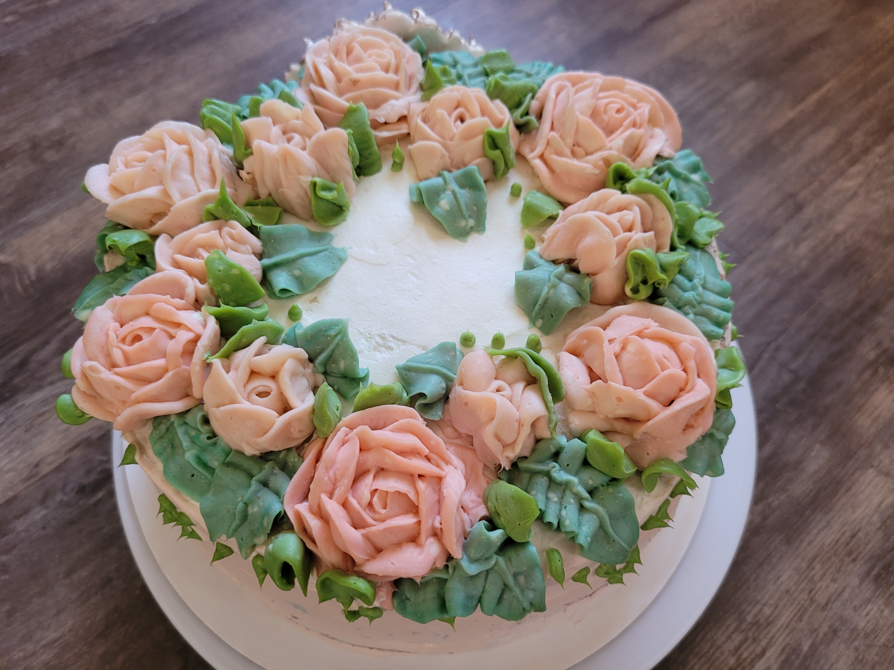
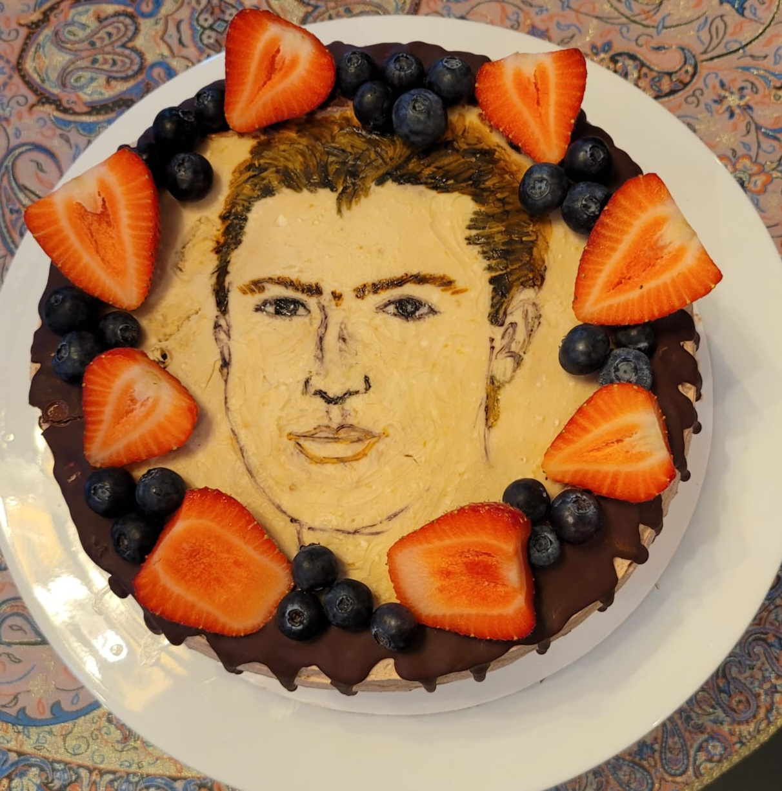
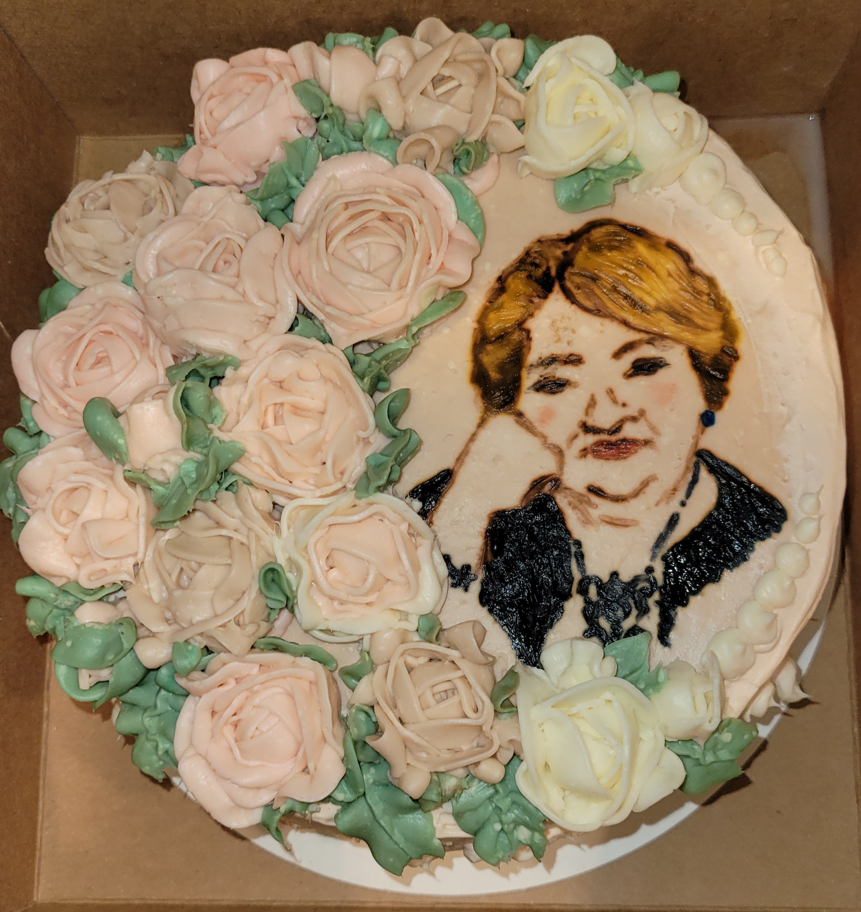

Cream Cheese



Ingrediets:
- Water - 50g
- Corn starch - 30g-45g (the more, the higher the density of the cream)
- Powdered sugar - 100g
- Curd cheese (I use Hochland) - 350g
- dyes
Direction:
- Dilute corn starch in water. Add powdered sugar, stir until smooth. Add 100 g of curd cheese and stir until a more or less homogeneous consistency. Small lumps will still remain, it's not scary. I like to use a hand whisk. Send the mixture to the pan.
- Boil, stirring vigorously, until the starch is completely boiled. The mixture will thicken and come together in a lump.
- It took me about 7 minutes to do this. Cool the custard base to room temperature. We combine the custard base with curd cheese (250g).
- It is convenient to use a hand mixer at low speeds. First, add 1 tablespoon, stir until smooth. Then add all the curd cheese and knead again. Everything, the cream is ready to work.